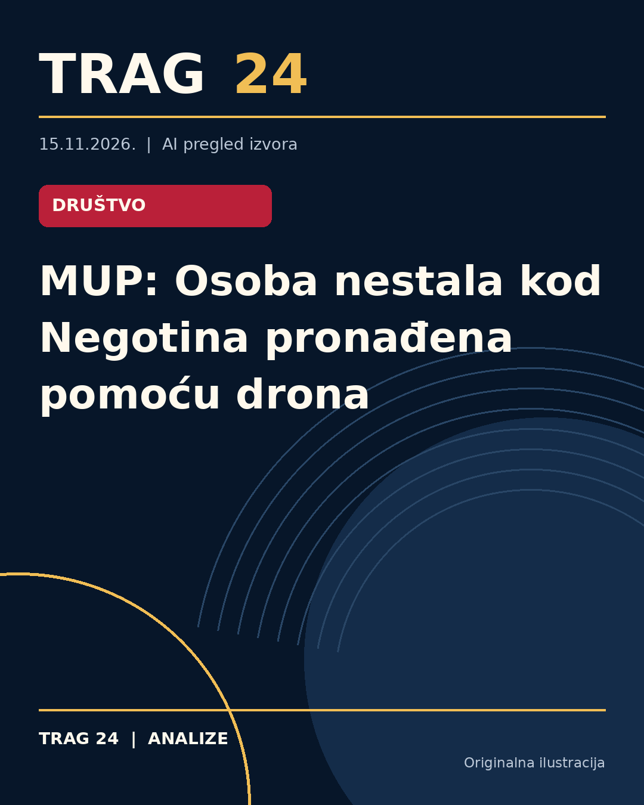

MUP: Osoba nestala kod Negotina pronađena pomoću drona

ŠTA SE DOGODILO
Pripadnici Sektora za vanredne situacije Ministarstva unutrašnjih poslova (MUP) pronašli su osobu koja je nestala prethodne večeri u okolini Negotina. Zahvaljujući korišćenju drona, nestala osoba je locirana u rejonu puta između Negotina i mesta Bukovo. Vatrogasci-spasioci su potom bezbedno prebacili osobu do vozila Hitne pomoći.
HRONOLOGIJA
Nestanak osobe dogodio se tokom prethodne večeri. U toku dana potom su intervenisali pripadnici Sektora za vanredne situacije MUP-a i dva člana Vatrogasno-spasilačke jedinice iz Negotina koji su koristili dron i vozilo na terenu. Pronalaženje osobe i njeno prebacivanje do Hitne pomoći obavljeno je danas popodne.
ŠTA NAVODE IZVORI
Svi izvori prenose da je osoba pronađena u rejonu puta od Negotina ka mestu Bukovo, uz upotrebu drona. Izvor iz MUP-a navodi da su dva člana Vatrogasno-spasilačke jedinice angažovana na pretrazi terena sa vozilom i dronom. Iz Insajdera dodatno je potvrđeno da se osoba nalazi u dobrom i stabilnom stanju nakon pronalaska.
ŠTA JE POTVRĐENO
Potvrđeno je da je osoba pronađena i spašena uz pomoć drona, da su vatrogasci-spasioci izvršili evakuaciju do Hitne pomoći, kao i da su na terenu učestvovali pripadnici Sektora za vanredne situacije i Vatrogasno-spasilačke jedinice Negotin.
ŠTA NIJE POTVRĐENO
Detalji o razlozima nestanka, lični podaci pronađene osobe, kao i tačno vreme pronalaska nisu dostupni iz dostavljenih informacija. Takođe, nije potvrđeno da li je osoba prethodno povređena ili je zatražila medicinsku pomoć nakon pronalaska.
ŠTA OSTАJE OTVORENO: Ostaje nejasno zbog kojih okolnosti je osoba nestala i koliko je trajala potraga pre angažovanja drona. Takođe, nema podataka o daljim medicinskim ili pravnim koracima vezanim za ovaj slučaj.
Izvori
- https://n1info.rs/vesti/mup-osoba-koja-je-sinoc-nestala-kod-negotina-pronadjena-pomocu-drona/
- https://insajder.net/prenosimo/mup-osoba-koja-je-sinoc-nestala-kod-negotina-pronadena-pomocu-drona
- https://www.danas.rs/vesti/drustvo/mup-osoba-koja-je-sinoc-nestala-kod-negotina-pronadjena-pomocu-drona/
Ova analiza je pripremljena uz pomoć veštačke inteligencije na osnovu javno dostupnih izvora. Navodi izvora nisu nužno nezavisno potvrđeni.